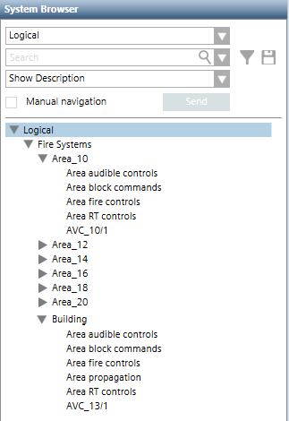

Logical View
The logical view is not predefined and, if required, authorized technicians can create it to represent the subsystems logical structure, such as, area, section, zone, sensor. Operators typically use this view to locate where any issue or alarm occurred. Note that you can add only one logical view.
